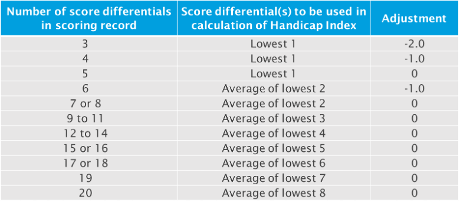

Instructions
Input your recent scores along with the course rating and slope rating for each course you have played at. If you enter a 9 hole score, you should enter the course rating for the 9 holes you have played, and not the rating for the full 18 holes. If you are not sure of the ratings for the courses you have played at, please use the link below to access the database provided by The R&A:
R&A Course Rating and Slope Database
To calculate an accurate handicap you must input at least 54 holes of scores, made up of either 18 hole or 9 hole rounds. Enter each round individually, please don't provide an 18 hole and 9 hole score in the same line otherwise the 9 hole score will be ignored. If you know the value of the playing condition adjustment then enter this in the field provided. If you don't know this value, the calculator will default to "0".
Although you can calculate a handicap index with just 54 holes of scoring data, the more data you provide the more accurate your handicap will be. Up to 20 scores can be submitted and for each one a "Score Differential" will be calculated. For 9 hole rounds, the differential for each set of 9 holes will be calculated and then two 9 hole rounds will be combined into one 18 hole differential. The handicap index is then calculated as per the table below:
